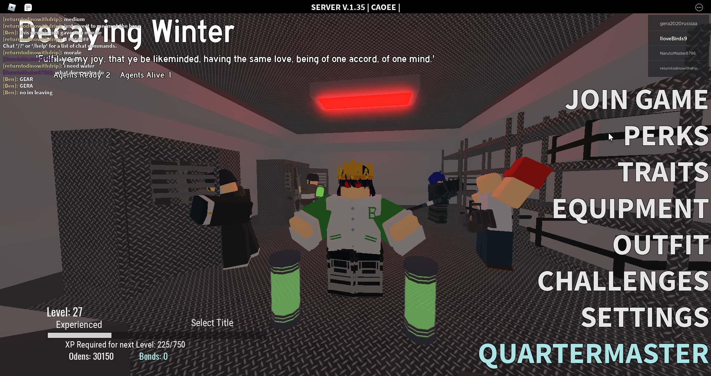

Decaying Winter
Где найти предметы
враги
Оружие
Крафтинг
Домой
Перки
Перки - способности, которые открываются у каждого игрока который достиг 5-го уровня.
Кнопка "Perks" в главном меню переносит в меню перков.

Внизу есть видео о всех сущевствующих перках. (На английском)
Топ 3 самых крутых перков (моё мнение)
№3: Vagabond
Этот перк позволяет игроку получить очень хорошее оружие ближнего боя (катану), которая к тому же не занимает места в инвентаре. Нажав на F, игрок взмахивает своей катаной горизонтально, что позволяет отрубить голову врагу за 2 таких удара. Каждая отрубленная голова даёт жетон. Каждый жетон увеличивает скорость ходьбы на 10%, максимально может увеличить до 100%. При получении сильного удара от врага, игрок теряет ровно половину жетонов. Если зажать F, каждый жетон прибавит игроку 5 очков здоровья и пропадёт.
№2: Artillerist
Перк, дающий игроку в начале игры пистолет, который не занимает места в инвентаре. Нажав на F, игрок достает пистолет и стреляет, куда направил выстрел сам игрок. При попадании в туловище, наносит 40 урона, в голову - 90, что моментально убивает врага. При убийстве с пистолета в голову, игрок получает эффект Deadeye, который уменьшает отдачу и разброс пуль при стрельбе из огнестрела. Перезарядка долгая.
№1: Executioner
При появлении, игрок получает очки, которые не занимают места в инвентаре. Нажав на F, игрок опускает очки, при повторном нажатии - поднимает. Когда очки опущены, у игрока будет красный экран, который показывает всю информацию о врагах (здоровье, преступления). Каждое убийство с опущенными очками даёт жетон, который при поднятии очков превращается в метал. мусор. Очки имеют свойство ломаться. Имеют такое же кол-во здоровья что и у игрока. При получении урока с опущенными очками они ломаются (их здоровье показано внизу рядом со здоровьем игрока).